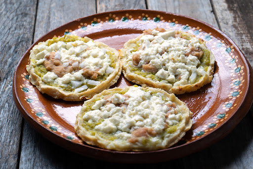

Sopes |
||
|---|---|---|
|  |
Los sopes son una comida mexicana, que consiste en una tortilla gruesa y ancha, «pellizcadas» por las orillas para formarle bordes y frita en manteca. Sobre ella se añaden diferentes ingredientes como chicharrón o carne, queso, verduras y salsa picante, con variaciones regionales. «Sope» también puede hacer referencia a las picadas veracruzanas, aunque se consideran dos platos diferentes.1 Para la preparación de los sopes, la lamina de maíz se prepara a base de masa fresca y levemente salada, a la cual se le da la clásica forma circular, pero de un grosor mayor que el de una tortilla convencional. Por lo general, el sope se fríe en manteca de cerdo aunque hay quienes utilizan aceite vegetal (depende de la región y del gusto). Es importante que la parte externa esté bien cocida, mientras que la parte interna guarde una parte de su consistencia suave. La razón de eso es que en muchas partes se acostumbra formar un reborde al sope ya cocido, moldeando con las yemas de los dedos toda la circunferencia de la lamina de maíz recién frita (Se 'pellizca', de ahí el otro nombre del sope: pellizcada) . Este reborde sirve para que el sope conserve en su interior los líquidos (por ejemplo, las salsas) que se le agreguen. Cabe notar que no en todas partes del país se elabora ese reborde "pellizcado" |
|